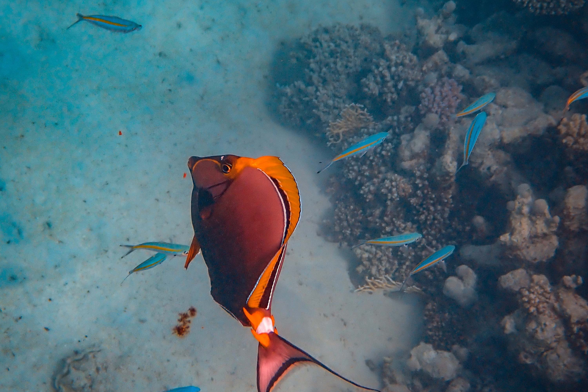

Huahine-Iti Islands:
The Huahine-Iti islands are in the South Pacific Ocean. They are located among the Society Islands apart of French Polynesia. While famous for the for the large freshwater eels, deemed sacred by the locals, at Underwater Lifestyles we are offering saltwater fish from the area.
Fish found in this environment
- Blue-Spotted Grouper
- Longnose Butterfly Fish
Key-West:
Key West is the westmost point in the archipelagos of the Straits of Florida. The saltwater life is a unique fusion of two ecosystems: The Atlantic Ocean, and The Gulf of Mexico. We at Underwater Lifestyles are interested in bringing you some of this diverse life so you can experience it in your home or office.
Fish found in this environment
- Pollenei Grouper
- Red Parrot Fish
- Passer Angel Fish
Mediterranean Sea:

The Mediterranean Sea is a large body of water connected to the Atlantic Ocean, surrounded entirely by land. Approximately 17,000 species (or over 6% of all know species) have been discovered here. This hot spot for biodiversity is perfect for our mission at Underwater Lifestyles.
Fish found in this environment
- Rainbow Wrasse
- Small Red Scorpion Fish
- Tompot Blenny
Golden Coast:
Also referred to as the California Coastline, the Golden Coast consists of many microclimates due to the cold California current and the hills and valleys that run up and down it. Its vast ecosystem gives much to offer to the environment and from Underwater Lifestyles.
Fish found in this environment
- Electric Blue Dempsey
- Green Reef Chromis
Lake Erie:
Lake Erie is one of the five Great Lakes of the Midwest. It is known for its shallow, warm waters. It is fed by Detroit River and drains into the Niagara river, forming the Niagara Falls. These elements create a complex ecosystem with many species in constant interaction. Underwater Lifestyles calls Lake Erie our home and are dedicated to preserving it.
Fish found in this environment
- Goldfish
- Brown Trout
Lake Edward:

Lake Edward, or known locally as the Rutanzige, is the Smallest of the African Great Lakes. This lake is located within National Parks, both in the Congo, and Uganda. Volcanic Fields, with extensive cones and craters give the aquatic life a uniqueness rarely seen anywhere else. A stunning environment that is breathtaking to see and be apart of. Underwater Lifestyles is helping maintain this lake’s national protection.
Fish found in this environment
- Ray Finned Fish
- Gourami Fish
- Nile Talapia
Rose River:
The Rose River is small river in Piedmont Virginia voted best of the Blue Ridge. This River is of the many endpoints of the Rappahannock River. Apart of the Healing Waters Project and working closely with Underwater Lifestyles, we are helping the environment in this area by bringing you a replication of this remote location.